Metaheurísticas basadas en poblaciones
Tema 2 de 2 Cuarto curso, 1.º cuatrimestre ≈ 59 min de lectura
Temas de SISIN · 2/2
- 1. Búsqueda local, Temple Simulado y CSP
- 2. Metaheurísticas basadas en poblaciones
2.1 Metaheurísticas basadas en poblaciones
En el tema 1 las metaheurísticas (MH) trabajaban con una sola solución que se iba moviendo por el espacio de búsqueda (búsqueda local, temple simulado, tabú). Este tema pasa a las MH basadas en poblaciones: en vez de una solución, se mantiene un conjunto de soluciones que evoluciona a la vez. El tema incluye la computación bioinspirada, los algoritmos genéticos, las colonias de hormigas (ACO, Ant Colony Optimization), los enjambres de partículas (PSO, Particle Swarm Optimization) y la programación genética. Las secciones 2.2–2.5 desarrollan la computación evolutiva y los algoritmos genéticos; las 2.6–2.12, la inteligencia de enjambre (ACO y PSO); y la 2.13, la programación genética.
Las MH se clasifican en tres familias. Los métodos constructivos (GRASP, ACO) construyen la solución pieza a pieza. Los de búsqueda o trayectorias recorren el espacio de soluciones mediante una transformación iterativa de una solución de partida (búsqueda local: enfriamiento simulado, búsqueda tabú…). Y los de poblaciones hacen evolucionar conjuntos de soluciones, habitualmente con procedimientos aleatorios (computación evolutiva, PSO…). Las diapositivas recogen también la taxonomía de Duarte (2004), que separa las MH según si están inspiradas en la naturaleza, si usan memoria y si se basan en trayectoria o en población.

Analogía
Una MH de trayectoria es un único montañero buscando la cumbre en la niebla: si sube a un pico local, se queda ahí. Una MH de población es un grupo de montañeros repartidos por la sierra que se comunican: los que están más alto atraen al resto, y es mucho menos probable que todos se queden atascados en el mismo pico pequeño.
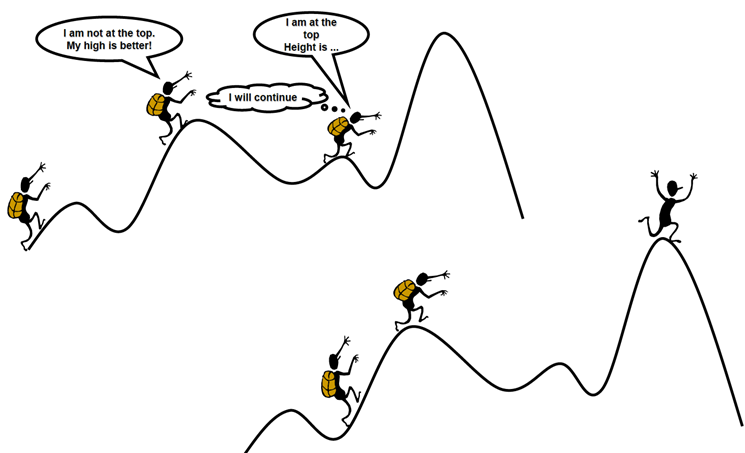
Para entenderlo mejor
Metaheurística (Wikipedia) — clasificación general de las metaheurísticas (artículo; enlazado en las diapositivas).
2.2 Computación evolutiva
La computación evolutiva (CE) usa modelos computacionales de los procesos evolutivos (Holland, 1975): incorpora los mecanismos naturales de selección y supervivencia para resolver problemas de IA que la naturaleza ya había "resuelto" muy eficientemente. Son métodos "débiles": no requieren conocimiento específico del problema. Sus variantes son las estrategias de evolución (Rechenberg, 1973), la programación evolutiva (Fogel y otros, 1966), la programación genética (Koza) y los algoritmos genéticos (Goldberg, 1989), entre otras.
La metáfora biológica es común a todas: en una población de individuos con recursos limitados, la competencia produce selección natural y sobreviven los que mejor se adaptan al medio. La evolución es la mejora de la adaptación de la población al medio.
En computación, la CE está formada por modelos de evolución de poblaciones de elementos que representan soluciones a un problema. Simular la evolución de esa población da una técnica de optimización probabilística. Es una metaheurística: un procedimiento general que se parametriza para cada problema y que conduce, de forma eficiente, a soluciones subóptimas (buenas, pero sin garantía de ser la mejor).

2.2.1 La estrategia evolutiva
En un problema de optimización, la calidad de cada solución (su fitness o adaptación al medio) se mide con la función objetivo o de coste. La estrategia es:
- Generar un conjunto aleatorio de soluciones: la población inicial.
- Evaluar el fitness de cada solución.
- Seleccionar a los mejores como base de la siguiente generación y aplicarles los operadores de variación: la recombinación (cruce) aplicada a dos "padres" produce "hijos", y la mutación aplicada a un individuo produce otro nuevo.
- Evaluar el fitness de la descendencia. Los hijos compiten con la población anterior para formar parte de la nueva generación (reemplazo).
- Iterar hasta encontrar un candidato de calidad suficiente o llegar a un límite.
Hay dos fuerzas que tiran en sentidos contrarios. Los operadores de variación (cruce y mutación) introducen diversidad; la selección aumenta la calidad media de la población. Combinadas, el fitness mejora generación tras generación.
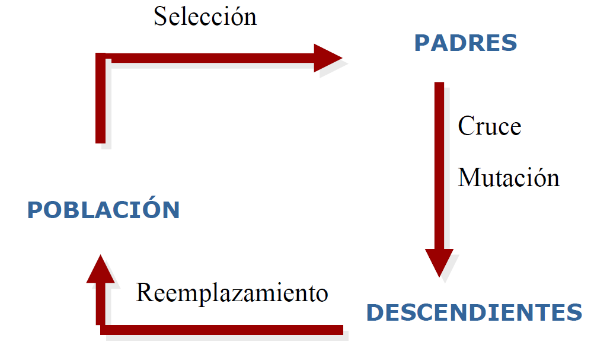
La MH es aleatoria por varios motivos: la selección da cierta probabilidad a individuos de fitness bajo (igual que el SA o la búsqueda tabú aceptan a veces soluciones peores), la recombinación elige al azar los fragmentos que se combinan, y la mutación elige al azar el fragmento que cambia.
Analogía
Es la cría de caballos de carreras. Empiezas con caballos variados (población), mides lo rápido que corren (fitness), cruzas preferentemente a los más rápidos (selección + cruce), de vez en cuando nace uno con algún rasgo nuevo (mutación), y los potros compiten por un sitio en la cuadra (reemplazo). Generación tras generación, la cuadra es más rápida.
Para entenderlo mejor
Algoritmos genéticos (UPV) — el ciclo completo de un algoritmo genético con un ejemplo, de la Universitat Politècnica de València (vídeo, 9:40).
2.2.2 Ejemplo: 8-reinas con un algoritmo genético
En el ejemplo de Russell y Norvig, cada individuo es una cadena de 8 dígitos (la fila de la reina en cada columna) y el fitness es el número de pares de reinas que no se atacan (28 = solución). La población inicial (24748552, 32752411, 24415124, 32543213) tiene fitness 24, 23, 20 y 11; las probabilidades de selección son proporcionales (31 %, 29 %, 26 %, 14 %). Se seleccionan parejas, se cruzan cortando por un punto aleatorio y se mutan algunos dígitos.
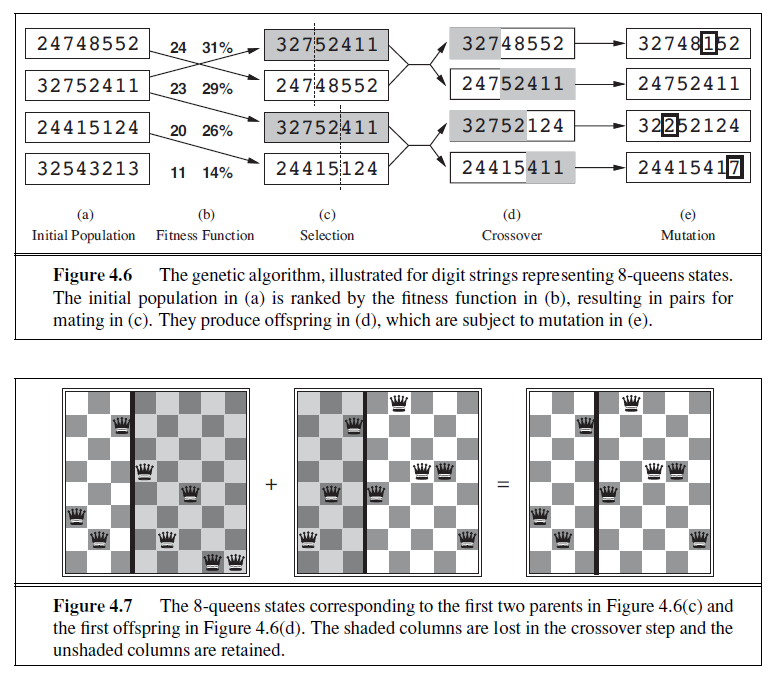
2.2.3 Tipos de algoritmos evolutivos
Todos comparten la estrategia general y se diferencian en los operadores y en cómo incorporan las nuevas soluciones a la población. Los algoritmos genéticos representan soluciones de n variables; la programación genética, soluciones en forma de árboles (programas). Las soluciones candidatas pueden tener codificación numérica entera o real; por ejemplo, cruzar (2.1, −0.3, 4.6) y (9.1, 0.2, 7.2) intercambiando las dos últimas componentes da (2.1, 0.2, 7.2) y (9.1, −0.3, 4.6).
2.3 Componentes de un algoritmo evolutivo
Los AE siguen un esquema de generar y probar: la función de fitness es una estimación heurística de la calidad de cada solución, y la búsqueda la dirigen los operadores de variación y selección. Diseñar un AE es decidir sus seis componentes:
- Representación de los individuos (y cómo inicializar la población).
- Función de fitness (cómo evaluar un individuo).
- Población (tamaño, inicialización).
- Mecanismo de selección de padres.
- Operadores de variación: cruce y mutación.
- Mecanismo de reemplazo generacional.
Además hay que fijar la condición de parada. Los componentes que dependen del problema son la representación, la correspondencia genotipo–fenotipo y la evaluación; el resto son componentes del algoritmo.

2.3.1 Representación
Representar es modelar la solución real en forma de individuo del AE: codificar la solución (fenotipo) como una cadena de genes (genotipo). Una vez elegida la representación, los operadores deben ser compatibles con ella. El vocabulario es biológico:
| Término | Significado |
|---|---|
| Cromosoma o genotipo | Vector que codifica la solución |
| Gen | Elemento mínimo del cromosoma (un atributo) |
| Alelo | Valor que toma cada gen |
| Fenotipo | La solución real que representa el cromosoma |

En el problema del viajante (TSP, recorrer todas las ciudades una vez con la distancia mínima), el genotipo es la secuencia de ciudades y el fenotipo, la ruta.

Hay varias codificaciones:
- Binaria: cada individuo es una secuencia de bits y cada gen es un bit; cómo se interpreta cada alelo depende de la aplicación. Por ejemplo, el genotipo 10100011 puede representar el entero
, o un real entre 2,5 y 20,5 con 8 bits: . - Real: cada individuo es una secuencia de números reales. El fenotipo no tiene por qué coincidir con el genotipo: con el genotipo (22, 5, 7), el fenotipo puede ser el propio vector o, por ejemplo, su suma (34).
- De orden: cada individuo es una permutación (como en el TSP). Necesita operadores especiales con reparación para que el resultado de cruzar o mutar siga siendo una permutación.

El paso de genotipo a fenotipo a veces es obvio (TSP), pero otras es complejo: el genotipo puede ser el conjunto de parámetros de entrada de otro algoritmo que obtiene la solución final (una simulación numérica, una visualización 3D, un sistema basado en reglas…).
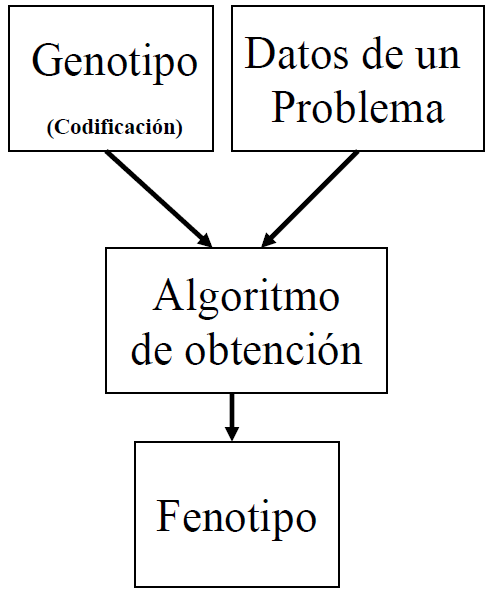
2.3.2 Población
La población representa las posibles soluciones y es la unidad de la evolución (lo que evoluciona es la población, no cada individuo). Importa su diversidad: cuántas soluciones distintas contiene. La inicialización puede ser aleatoria (uniforme en el rango de cada parámetro, para repartir las soluciones por todo el espacio: en binario cada bit 0 o 1 con p = 0,5; en real, uniforme en [a, b]), heurística o una combinación de ambas.
2.3.3 Función de calidad (fitness)
Representa los requisitos a los que debe adaptarse la población y cuantifica su mejora. Es la etapa más costosa: hasta el 95 % de la CPU, porque se evalúa cada individuo de cada generación. Puede ser una función simple (un número real), un procedimiento, un simulador o incluso un proceso externo (experimentos). A veces es un vector, ordenable o no. En los problemas típicos de optimización es la función objetivo; si hay varios objetivos, se agregan en una solución de compromiso (media ponderada, máximo, mínimo…).
2.3.4 Selección
La selección distingue a los individuos según su calidad. Los elegidos son los padres, que formarán la descendencia (offspring, candidatos a entrar en la nueva generación). Es probabilística: los mejores tienen más probabilidad, pero los peores también tienen opciones, lo que mantiene la diversidad y evita quedarse atrapado en un óptimo local (local trapping). La presión selectiva mide hasta qué punto el proceso está dirigido por los mejores individuos.
| Método | Cómo elige |
|---|---|
| Aleatoria | Al azar, sin mirar el fitness |
| Torneo | Se escogen k individuos al azar y gana el mejor (binario k = 2, ternario k = 3) |
| Orden lineal (ranking) | Se ordena la población por fitness y la probabilidad depende de la posición |
| Ruleta | Probabilidad proporcional al fitness |
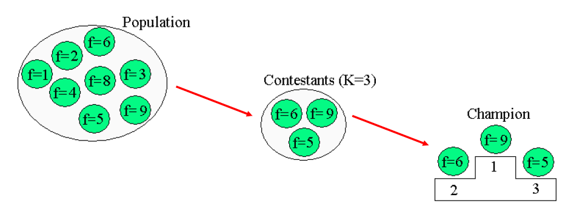
Analogía
La ruleta es una rifa en la que cada individuo compra tantas papeletas como fitness tiene: el mejor tiene más papeletas, pero cualquiera puede ganar. El torneo es un "mejor de k": sacas k al azar y pasa el ganador, así que cuanto mayor es k, más difícil lo tienen los débiles (más presión selectiva).
Para entenderlo mejor
Selección por ruleta en algoritmos genéticos — cómo se calculan las probabilidades y se gira la ruleta, paso a paso (vídeo, 11:33).
2.3.5 Cruce
El cruce mezcla los genotipos de dos padres. Debe diseñarse de acuerdo con la representación para dar individuos válidos. Se aplica con probabilidad alta,
En binario, el más simple es el cruce de un punto: se corta a los dos padres por el mismo punto aleatorio y se intercambian las colas. Con 1111111 y 0000000 cortados tras el tercer gen salen 1110000 y 0001111. El cruce de dos puntos intercambia el segmento central.
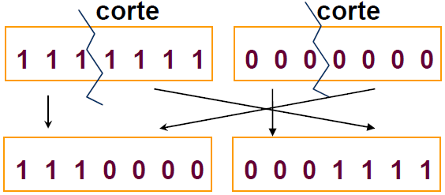

En la representación de orden un cruce normal produciría ciudades repetidas, así que se usan cruces con reparación:
OX (order crossover): se copia un segmento aleatorio del padre 1 en el hijo y se completa con el resto de alelos en el orden en que aparecen en el padre 2, empezando tras el segundo punto de corte. Con P1 = (1 2 3 | 4 5 6 7 | 8 9) y P2 = (9 3 7 | 8 2 6 5 | 1 4): se copia 4 5 6 7; el padre 2 leído desde el segundo corte es 1 4 9 3 7 8 2 6 5; quitando los ya usados queda 1 9 3 8 2, que se coloca a partir del segundo corte (y da la vuelta): H1 = (3 8 2 4 5 6 7 1 9).
PMX (partially mapped crossover): se elige una subcadena central y se establece una correspondencia por posición entre los valores de ambas. Cada hijo recibe la subcadena central de un padre y el mayor número posible de valores del otro en sus posiciones; si un valor ya está, se sigue la correspondencia. Con P1 = (1 2 3 | 4 5 6 7 | 8 9) y P2 = (4 5 3 | 1 8 7 6 | 9 2), las correspondencias son 1↔4, 8↔5, 7↔6, 6↔7. El hijo 1 toma el centro de P2 (1 8 7 6) y el resto de P1: el 1 ya está, así que pasa a 4; el 8 ya está, pasa a 5 → H1 = (4 2 3 | 1 8 7 6 | 5 9). Análogamente, H2 = (1 8 3 | 4 5 6 7 | 9 2).
CX (cycle crossover): cada valor del hijo conserva la posición que tenía en uno de los padres. Partiendo de un valor
En representación real:
- Cruce aritmético: combinación convexa con un parámetro α. Con (22, 10, 4), (12, 6, 9) y α = 0,1:
y . - Cruce plano: cada gen del hijo se toma con distribución uniforme en el intervalo que forman los padres:
, , .
Analogía
El cruce es como combinar dos recetas buenas: la base de una y la salsa de otra. En el TSP no vale "cortar y pegar" sin más, porque saldría una ruta que visita Lugo dos veces y se salta Vigo; OX, PMX y CX son formas de mezclar las rutas reparando las repeticiones.
2.3.6 Mutación
Es una operación unaria sobre un genotipo que produce un descendiente ligeramente modificado. Debe permitir alcanzar cualquier parte del espacio de búsqueda, su tamaño debe estar controlado y debe dar genotipos válidos. Se aplica después del cruce, con una probabilidad
| Representación | Mutación |
|---|---|
| Binaria | Invertir un bit: 1111111 → 1110111 |
| Entera | Random resetting: con probabilidad |
| De orden | Intercambio recíproco de dos valores al azar; inserción (se toma un valor y se inserta junto a otro); mezcla (se barajan los valores de un tramo) |
| Real | Sumar ruido gaussiano: |
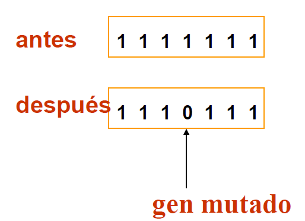
2.3.7 Reemplazo
Determina qué individuos forman la nueva generación, es decir, qué descendientes sobreviven. Se parece a la selección pero ocurre después de generar la descendencia, y usa métodos similares (torneo, lineal, aleatorio, ruleta…). Hay dos modelos:
- Generacional: la descendencia sustituye por completo a la generación anterior. Se seleccionan H padres, se cruzan con
, se mutan con y los H hijos forman la nueva población. Con elitismo se conserva el mejor individuo de la generación anterior para no perderlo. - Permanente (estacionario): se seleccionan solo dos padres, se cruzan (con probabilidad 1) y se mutan, y los dos hijos compiten por entrar en la población actual reemplazando a otros individuos.
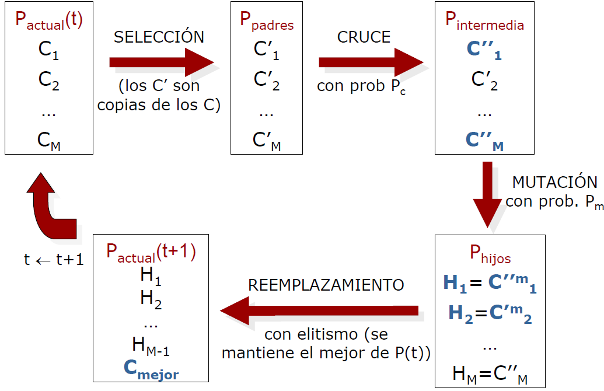
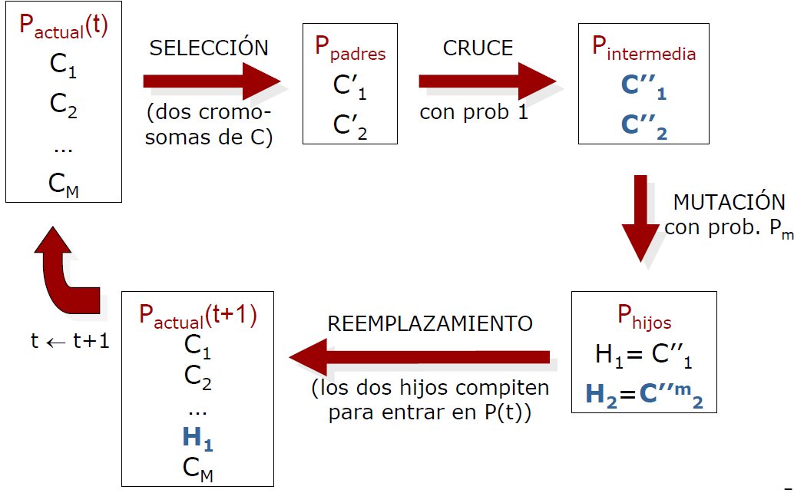
En el modelo permanente hay varias estrategias de reemplazo:
| Estrategia | A quién reemplaza el hijo | Efecto |
|---|---|---|
| RW (replace worst) | Al peor de la población | Alta presión selectiva |
| RTS (torneo restringido) | Al más parecido de entre w individuos (w = 3…) | Mantiene cierta diversidad |
| WAMS (peor entre semejantes) | Al peor de los w individuos más parecidos al hijo (de toda la población) | Equilibrio diversidad / presión selectiva |
| DC (crowding determinístico) | Al padre más parecido | Mantiene la diversidad |
2.3.8 Experimentación, diversidad y exploración
Como el algoritmo es aleatorio, nunca se sacan conclusiones de una única ejecución: se hacen varias ejecuciones independientes y se dan la media y la desviación típica, con tests estadísticos de significancia. Los ejemplos deben ser representativos del caso real, ni triviales ni demasiado simples.
Diversidad. Una presión selectiva alta hace que todos los individuos se parezcan (falta de diversidad) y provoca convergencia prematura hacia la zona de los primeros buenos individuos. Se combate con mecanismos de diversidad o reinicializando el algoritmo.
Exploración frente a explotación (lo mismo que diversificación e intensificación en el tema 1). La exploración visita zonas desconocidas del espacio; en exceso es una búsqueda aleatoria que no converge. La explotación mejora localmente a los individuos; en exceso se convierte en búsqueda local y converge a un óptimo local.
2.4 Ejemplo trabajado: una generación paso a paso
Se busca maximizar
| Individuo | x | Fitness |
% del total | Copias esperadas ( |
|---|---|---|---|---|
| 01101 | 13 | 169 | 14,4 % | 0,58 |
| 11000 | 24 | 576 | 49,2 % | 1,97 |
| 01000 | 8 | 64 | 5,5 % | 0,22 |
| 10011 | 19 | 361 | 30,9 % | 1,23 |
| Total | 1170 | 100 % | 4 |
Selección por ruleta. Girando la ruleta 4 veces, lo esperable es que 11000 salga unas 2 veces, 10011 y 01101 una vez, y 01000 ninguna. Supongamos que salen 01101, 11000, 11000 y 10011.
Cruce de un punto. Se emparejan (01101, 11000) con corte tras el bit 4 y (11000, 10011) con corte tras el bit 2:
| Padres | Corte | Hijos | x | Fitness |
|---|---|---|---|---|
| 0110|1 × 1100|0 | 4 | 01100, 11001 | 12, 25 | 144, 625 |
| 11|000 × 10|011 | 2 | 11011, 10000 | 27, 16 | 729, 256 |
Mutación. Con
Resultado. Con reemplazo generacional, la nueva población tiene fitness total 1754 (antes 1170), media 438,5 (antes 292,5) y máximo 729 (antes 576). En una sola generación, la selección ha concentrado los genes buenos y el cruce ha creado un individuo (11011) mejor que cualquiera de sus padres.
2.4.1 Parámetros y su efecto
| Parámetro | Qué representa | Valores típicos |
|---|---|---|
| Tamaño de población N | Cuántas soluciones evolucionan a la vez | Decenas a cientos |
| Probabilidad de cruzar una pareja | 0,6 – 0,9 | |
| Probabilidad de mutar cada gen | Muy baja (p. ej. 1/longitud del cromosoma) | |
| k (torneo) | Nº de concursantes por torneo | 2 (binario), 3 (ternario) |
| σ | Tamaño de la mutación gaussiana (real) | Pequeño respecto al rango |
| Elitismo | Nº de mejores que pasan sin cambios | 1 |
| ¿Qué pasa si…? | Efecto |
|---|---|
| …subo N | Más diversidad y mejor exploración, pero cada generación cuesta más (el fitness es el 95 % de la CPU) |
| …subo |
Más mezcla de buenas partes; si es muy baja, la población apenas cambia |
| …subo mucho |
Demasiada exploración: se rompen las buenas soluciones y se acerca a una búsqueda aleatoria |
| …pongo |
Si un alelo desaparece de la población, ya no puede volver: riesgo de estancarse |
| …subo k o uso RW | Más presión selectiva: converge antes, pero con riesgo de convergencia prematura |
| …uso crowding (DC) o RTS | Más diversidad; converge más despacio pero explora mejor |
| …quito el elitismo | Se puede perder la mejor solución encontrada de una generación a otra |
2.5 Ejercicios
Ejercicio 1: 8-reinas
El espacio de búsqueda son todas las configuraciones posibles de reinas. El fitness es el número de reinas atacadas
Los operadores son: mutación por intercambio de dos posiciones aleatorias; cruce eligiendo un punto aleatorio i, que corta a P1 y P2 en dos segmentos: el hijo 1 empieza con el primer segmento de P1 y se completa con los valores que faltan en el orden de P2 (y el hijo 2 al revés), para que sigan siendo permutaciones. La selección toma como padres a los 2 mejores de 5 elegidos al azar (torneo). En la población, 2 padres dan 2 hijos: la población pasa a n + 2 y se eliminan los dos peores (modelo permanente).
Ejercicio 2: problema de la mochila
Hay N objetos con peso
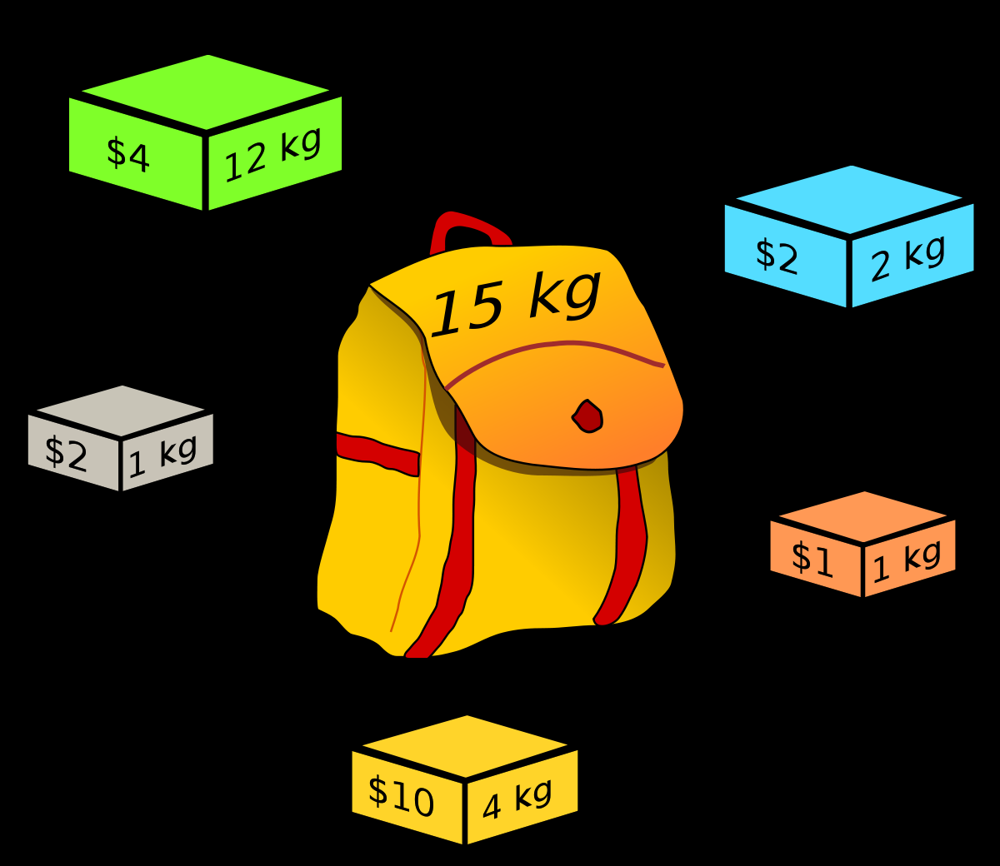
El espacio de búsqueda son todos los vectores binarios de longitud N:
Ejercicio 3: problema del viajante (TSP)
El diseño propuesto es:
| Componente | Elección |
|---|---|
| Solución inicial | Aleatoria o greedy |
| Representación | De orden: permutación de {1, …, n} |
| Selección | Torneo binario |
| Enfoque | Generacional con elitismo (1 individuo) |
| Cruce | OX |
| Mutación | Intercambio de 2 genes |
| Función objetivo (minimizar) | Distancia recorrida: |
En la función objetivo,
2.6 Inteligencia de enjambre
La inteligencia de enjambre (swarm intelligence) es una familia de algoritmos inspirados en el comportamiento colectivo animal: sociedades de insectos, bandadas de aves, bancos de peces, manadas de mamíferos… La idea es la inteligencia colectiva emergente de un grupo de agentes simples. Bonabeau, Dorigo y Theraulaz (1999) los definen como algoritmos o mecanismos distribuidos de resolución de problemas inspirados en el comportamiento colectivo de colonias de insectos sociales u otras sociedades animales. Kevin Kelly (1998) lo resume así: "Dumb parts, properly connected into a swarm, yield smart results" (piezas tontas, bien conectadas en enjambre, dan resultados inteligentes).
Dentro de la IA, la inteligencia de enjambre (SI) es un subconjunto de los sistemas multiagente (MAS, Multi-Agent Systems), que a su vez forman parte de la IA.
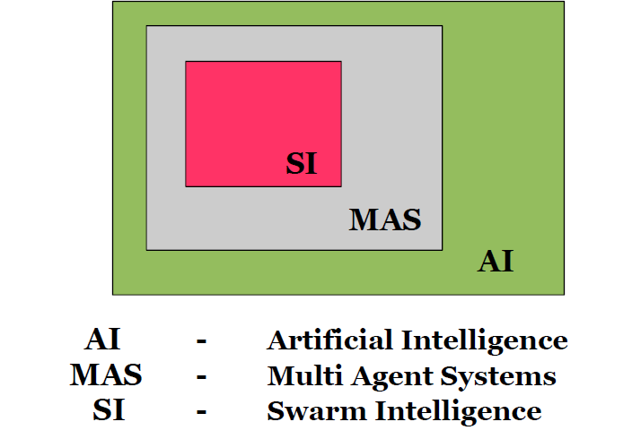
2.6.1 Comportamiento emergente
Las colonias de insectos realizan actuaciones complejas de forma inteligente, flexible y fiable, que ningún insecto podría hacer solo: cada uno sigue reglas simples y usa comunicación local simple. La estructura global (el nido) emerge de las acciones de los insectos, aunque cada una por separado no sea fiable.
Un enjambre tiene estas características:
- Está compuesto de agentes simples y auto-organizados.
- Es descentralizado: no hay un único supervisor.
- No hay un plan global: el comportamiento es emergente.
- Es robusto: las tareas se completan aunque un individuo falle.
- Es flexible: responde a cambios externos y percibe el entorno (sentidos), pero no tiene un modelo explícito del entorno.
2.6.2 Dos ejemplos: ACO y PSO
La ACO (Ant Colony Optimization, optimización basada en colonias de hormigas) agrupa técnicas inspiradas en las colonias de hormigas. Su analogía son los problemas de rutas en grafos: mientras buscan comida, las hormigas depositan rastros de feromona que atraen a otras, y así acaban formando caminos mínimos entre la comida y el hormiguero.
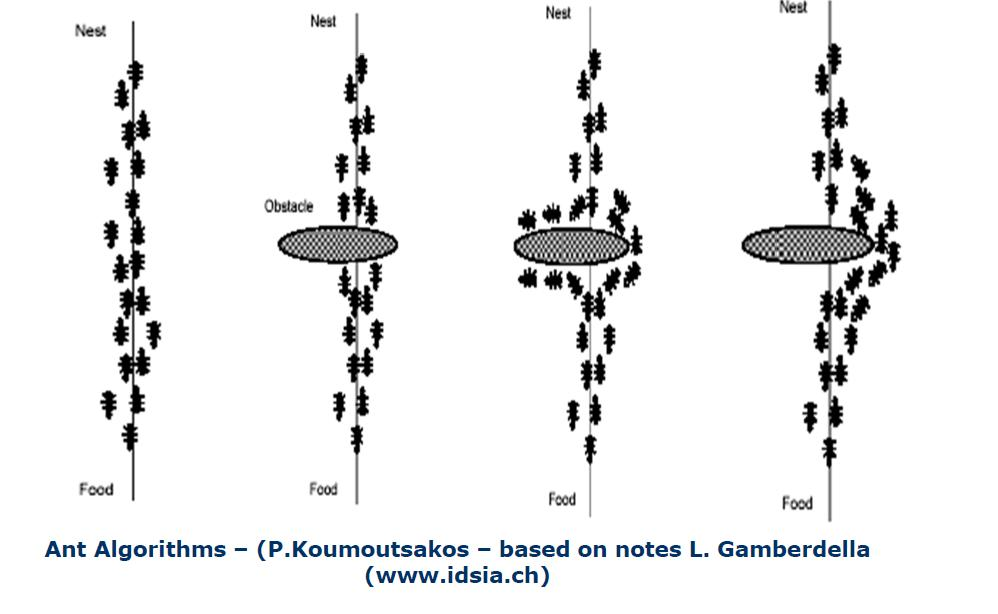
La PSO (Particle Swarm Optimization, optimización basada en nubes de partículas) se inspira en las bandadas de aves y los bancos de peces. Las partículas son agentes simples que vuelan por el espacio de búsqueda y almacenan (y posiblemente comunican) la mejor solución que han descubierto.
2.7 Hormigas naturales
Las colonias de hormigas siguen principios de auto-organización: su comportamiento es altamente coordinado aunque está formado por muchas hormigas independientes que colaboran, a menudo con capacidades visuales y acústicas nulas. Así resuelven tareas como la búsqueda de comida, la división del trabajo, la clasificación de crías o el transporte cooperativo.
2.7.1 Estigmergia
Las hormigas colaboran mediante estigmergia (stigmergy): una comunicación indirecta a través de modificaciones del entorno. Muchos comportamientos auto-organizados de los insectos sociales se explican con modelos simples basados en ella. Durante la búsqueda de comida (foraging), cada hormiga deposita en el suelo feromonas, que aumentan la probabilidad de que otras sigan el mismo camino. Estas feromonas de pista (trail pheromones) son las que forman las filas de hormigas.
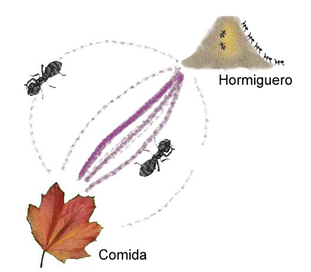
Analogía
Son los senderos que se forman en el césped de un parque. Nadie los planifica: el primero que cruza deja una marca leve, el siguiente tiende a seguirla y la marca se hace más visible. Al final queda un camino claro, normalmente el más corto. Si la gente deja de pasar, el césped vuelve a crecer (la evaporación).
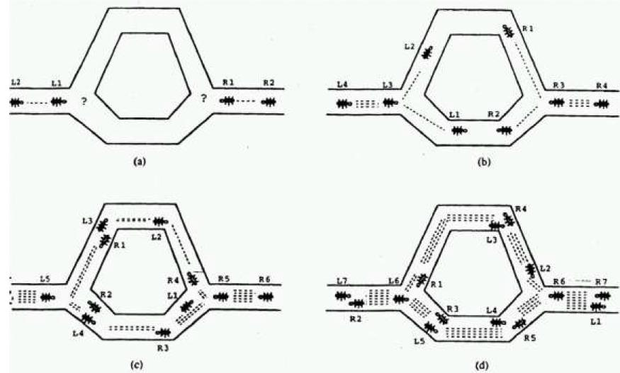
Para entenderlo mejor
Introducción a la optimización por colonia de hormigas (UPV) — cómo las hormigas reales encuentran el camino más corto con feromonas (vídeo, 9:56).
2.7.2 El experimento del puente doble
Goss et al. (1989) y Deneubourg et al. (1990) unieron un hormiguero con la comida mediante dos tipos de puente de dos ramas, con ramas a 60° y unos 15 cm de recorrido:
- a) Ramas iguales (r = 1, r es la razón entre las longitudes de las ramas).
- b) Una rama el doble de larga que la otra (r = 2).
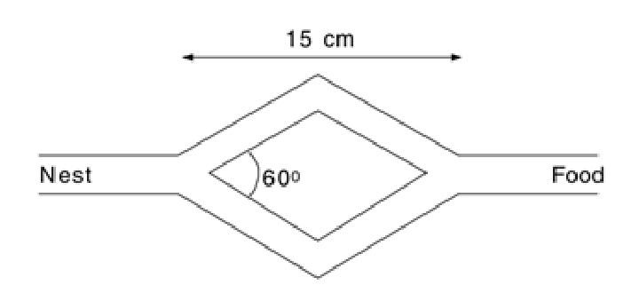
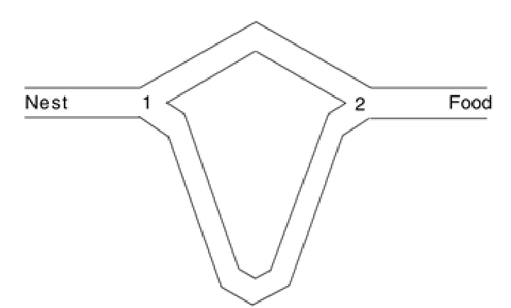
Con ramas iguales, las hormigas acababan convergiendo a una sola rama, cualquiera de las dos. En la mayoría de los experimentos, una rama se llevaba el 80–100 % del tráfico. Las fluctuaciones aleatorias del principio deciden cuál, y la feromona amplifica esa pequeña ventaja.
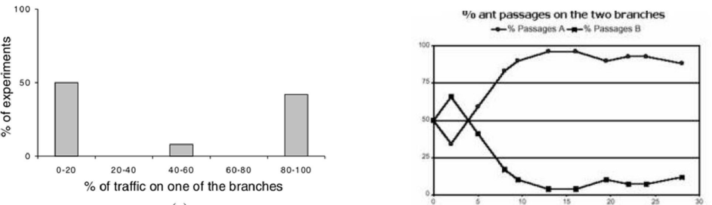
Con una rama el doble de larga, las hormigas acababan convergiendo a la rama más corta: en casi todos los experimentos, la corta tenía el 80–100 % del tráfico. Las que van por ella vuelven antes y refuerzan su rastro antes que las de la larga.
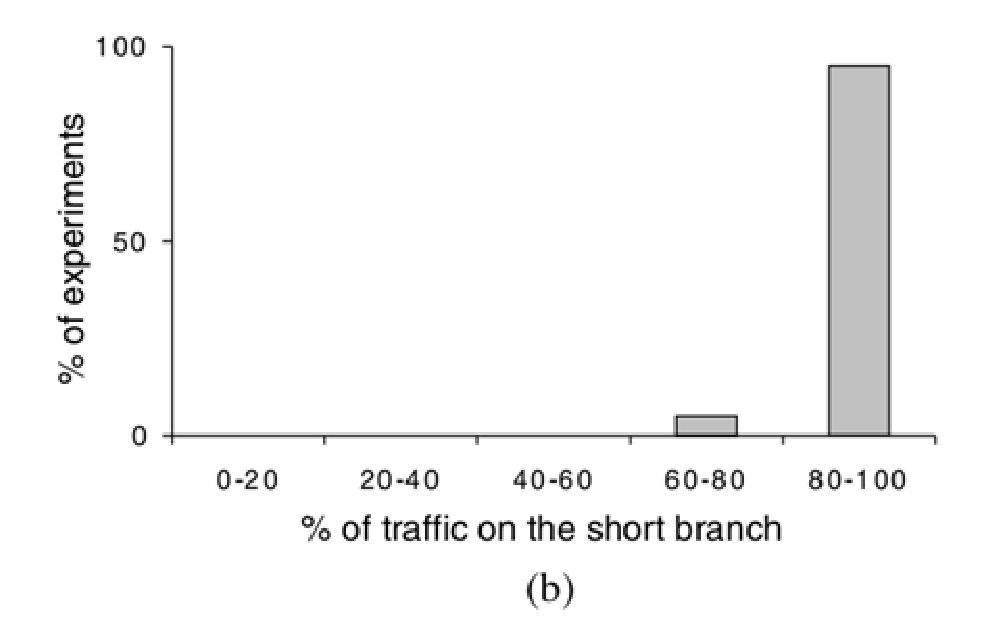
Pero si se añade la rama corta 30 minutos después, cuando el rastro ya está fijado en la larga, la mayoría sigue por el camino largo: la feromona acumulada pesa más que la ventaja de distancia. Es el riesgo de quedarse atascado en un óptimo local, y por eso los algoritmos añaden evaporación.
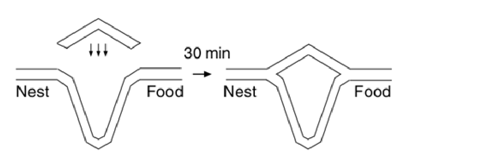
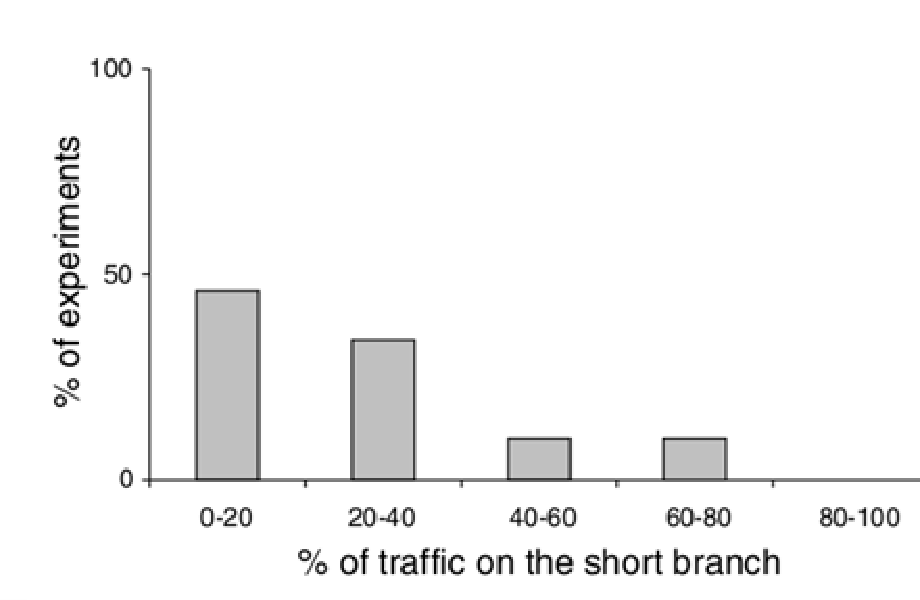
Si se encadenan dos puentes, las hormigas también encuentran el camino más corto entre hormiguero (N) y comida (F) combinando las ramas cortas de ambos.
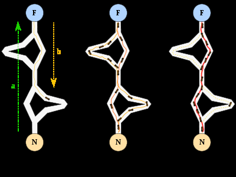
2.8 De las hormigas naturales a las artificiales
2.8.1 Modelo del puente doble
El modelo de hormigas artificiales es estocástico y combina la exploración del entorno, la explotación de las pistas de feromona, el depósito de feromona y su evaporación. La probabilidad de elegir una rama depende de la concentración de feromona τ depositada en ella. En el puente doble, desde el nodo
El exponente α amplifica las diferencias. Con
La feromona se actualiza sumando a la que había las hormigas que pasan en cada sentido. Por la rama corta se tarda 1 instante, y por la larga (r = 2) se tardan 2:
El primer término es la feromona anterior. El segundo, las hormigas que salen de
2.8.2 S-ACO (aproximación simple)
La S-ACO generaliza el modelo a un grafo
El depósito de feromona,
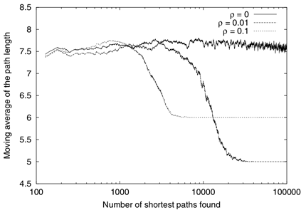
Sin evaporación (ρ = 0), la longitud media no baja de ~7,5. Con ρ = 0,01 converge hacia ~5, y con ρ = 0,1 baja antes pero se queda en ~6: la evaporación es necesaria, pero muy alta hace olvidar demasiado rápido.
2.8.3 La hormiga artificial
En la ACO, cada hormiga artificial es un agente probabilístico que construye soluciones. Para ello usa rastros de feromona τ artificiales, que cambian con el tiempo para reflejar la experiencia adquirida por la colonia, e información heurística η sobre la instancia concreta del problema (p. ej., la distancia entre ciudades).
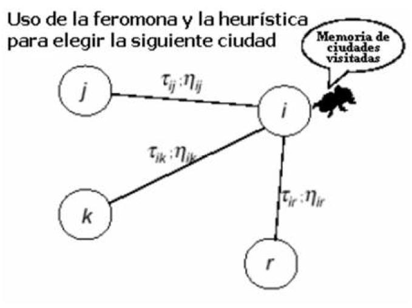
Además, la hormiga:
- Recuerda los nodos recorridos en una lista de visitados, su memoria
. Al terminar, esa lista es la solución construida. La memoria sirve para construir soluciones factibles (implementar las restricciones), calcular los valores heurísticos η, evaluar la solución y reconstruir el camino hacia atrás. - Tiene un estado inicial
y una o más condiciones de terminación . - Si está en el estado
y no se cumple la terminación, se mueve a un nodo de su entorno , pasando al estado . - Tiene prohibidos los movimientos hacia estados no viables (en la mayoría de aplicaciones), gracias a su memoria y/o a las heurísticas.
- Al añadir una componente
al estado actual, puede actualizar la feromona de esa componente o de la conexión.
2.8.4 Regla de decisión
La hormiga elige cada movimiento con una regla de decisión probabilística. Esta regla combina la feromona disponible localmente (τ), los valores heurísticos (η) y la memoria
Aquí
2.8.5 Actualización de feromona
Cuando termina una solución, la hormiga puede reconstruir el camino hacia atrás y actualizar la feromona de las componentes usadas. Esa actualización tiene dos partes:
- Retroalimentación positiva: un aporte extra de feromona refuerza en el futuro los componentes de las buenas soluciones. Cuanto mejor es la solución, más feromona aporta.
- Evaporación: evita que los rastros crezcan sin límite, para olvidar las malas decisiones o la influencia excesiva de las decisiones previas y evitar óptimos locales.
En la fórmula, ρ es la tasa de evaporación,
Analogía
Es como Google Maps con valoraciones: cada conductor que llega rápido deja una buena valoración en las calles que usó (depósito), y las valoraciones antiguas pierden peso con el tiempo (evaporación). El siguiente conductor elige calle combinando las valoraciones (τ) con lo corta que parece en el mapa (η).
Para entenderlo mejor
Algoritmo de optimización por colonia de hormigas (UPV) — la regla de transición y la actualización de feromona explicadas paso a paso (vídeo, 10:04). Algoritmo de la colonia de hormigas (Wikipedia) — resumen del algoritmo y sus variantes (artículo).
2.9 El sistema de hormigas (SH)
El sistema de hormigas (SH o AS, Ant System) de Dorigo, Maniezzo y Colorni (The Ant System: Optimization by a Colony of Cooperating Agents, IEEE Trans. on Systems, Man and Cybernetics–Part B, vol. 26, 1996, 1–13) es la base del desarrollo posterior de la ACO.
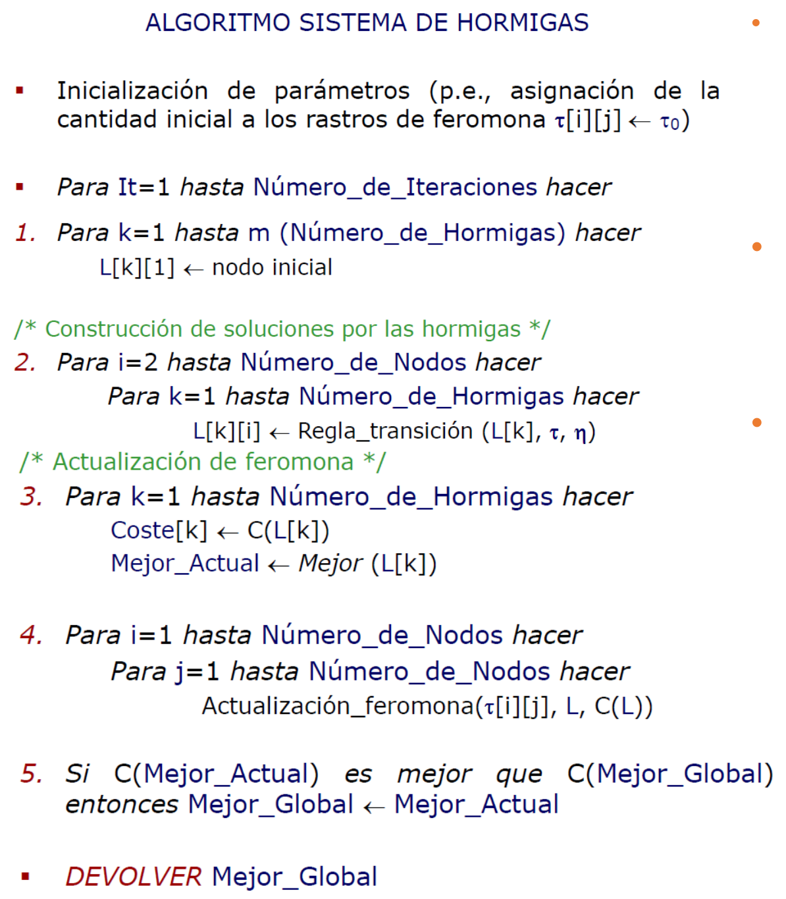
Primero se inicializa la feromona a
La feromona inicial debe ser ligeramente superior a la que depositan las hormigas en una iteración. Con valores bajos, los primeros recorridos influyen demasiado. Con valores altos, la convergencia es lenta.
2.9.1 El SH en el TSP
La feromona
Los casos extremos ayudan a entender α y β. Con α = 0 solo cuenta la heurística: las ciudades más cercanas son las más probables, y el resultado equivale al algoritmo clásico del gradiente (voraz) con múltiples puntos de partida. Con β = 0 solo cuenta la feromona, lo que suele dar resultados bastante pobres, sobre todo si α > 1.
Cada hormiga se coloca en una ciudad inicial y, en cada paso, añade al viaje parcial una ciudad no visitada (la restricción). La solución termina cuando ha visitado todas.
Los valores típicos de los parámetros en cada variante de ACO son estos (
| Algoritmo | α | β | ρ | m | |
|---|---|---|---|---|---|
| AS | 1 | 2 a 5 | 0,5 | n | |
| EAS | 1 | 2 a 5 | 0,5 | n | |
| AS |
1 | 2 a 5 | 0,1 | n | |
| MMAS | 1 | 2 a 5 | 0,02 | n | |
| ACS | — | 2 a 5 | 0,1 | 10 |
note
La tabla incluye el MMAS (MAX-MIN Ant System), que las diapositivas no explican.
2.9.2 Ejemplo trabajado: TSP de 6 ciudades
El ejemplo (Moreno-Vega y Moreno-Pérez, Heurísticas en Optimización, 1999) usa 6 ciudades, recorrido circular y 6 hormigas, cada una empezando en una ciudad distinta. La feromona inicial es igual en todos los arcos, así que al principio la elección depende solo de
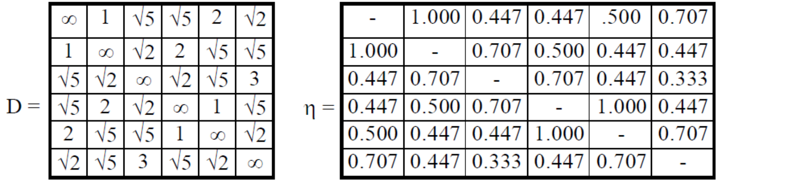
Hormiga 1, desde la ciudad 1. En cada paso se calculan las probabilidades hacia las ciudades no visitadas, se saca un número uniforme
| Desde | Probabilidades | U | Elige | Solución parcial |
|---|---|---|---|---|
| 1 | 2: 0,322 · 3: 0,144 · 4: 0,144 · 5: 0,161 · 6: 0,227 | 0,000 | 2 | (1 2 - - - -) |
| 2 | 3: 0,336 · 4: 0,237 · 5: 0,212 · 6: 0,212 | 0,031 | 3 | (1 2 3 - - -) |
| 3 | 4: 0,475 · 5: 0,300 · 6: 0,225 | 0,673 | 5 | (1 2 3 5 - -) |
| 5 | 4: 0,585 · 6: 0,415 | 0,842 | 6 | (1 2 3 5 6 -) |
| 6 | 4: 1,000 | — | 4 | (1 2 3 5 6 4) |
Por ejemplo, desde la ciudad 1:
Las hormigas 2 y 3 hacen lo mismo y obtienen (2 3 5 6 4 1) y (3 2 1 5 4 6). Construidas las 6 soluciones, se actualiza la feromona: cada hormiga aporta
| Hormiga | Aporte | Solución | |
|---|---|---|---|
| 1 | 10,53 | 9,49 | (1 2 3 5 6 4) |
| 2 | 10,53 | 9,49 | (2 3 5 6 4 1) |
| 3 | 9,05 | 11,04 | (3 2 1 5 4 6) |
| 4 | 11,12 | 8,99 | (4 2 6 1 3 5) |
| 5 | 10,88 | 9,19 | (5 1 6 2 4 3) |
| 6 | 9,47 | 10,55 | (6 5 3 4 2 1) |
Con ρ = 0,2, cada arco queda con
| 2 | 3 | 4 | 5 | 6 | |
|---|---|---|---|---|---|
| 1 | 45,58 | 13,99 | 23,99 | 25,23 | 33,73 |
| 2 | 35,03 | 33,73 | 8,00 | 23,18 | |
| 3 | 24,74 | 52,72 | 16,04 | ||
| 4 | 35,03 | 35,03 | |||
| 5 | 79,54 |
Los arcos de buenas soluciones (3–5, 1–2) acumulan mucha feromona. El arco 1–3, que solo usa una hormiga, se queda en 13,99. En la siguiente iteración, las hormigas preferirán los arcos reforzados.
Erratas en el ejemplo
- Recalculando con la matriz D, los costes de las hormigas 3 y 5 serían 10,65 y 11,30, no 9,05 y 10,88.
- Con los aportes de la tabla y
, la matriz se reproduce salvo tres celdas: saldría 5,00 (no 8,00), saldría 25,03 (no 35,03) y saldría 34,53 (no 79,54). - Las fórmulas generales de la diapositiva usan
, pero el ejemplo usa , que solo cambia la escala.
2.10 Otros algoritmos ACO
2.10.1 Sistema de hormigas elitista (SHE, EAS)
En el EAS (Elitist Ant System), la feromona no solo se actualiza con las soluciones de las hormigas de la iteración, sino también con la mejor solución obtenida hasta el momento (
2.10.2 Sistema de hormigas con ranking (SHR, RAS)
En el RAS (Rank-based Ant System), las hormigas se ordenan por la calidad de su solución y el depósito de feromona es proporcional a su posición en el ranking: la mejor contribuye más. Depositan las
2.10.3 Sistema de colonia de hormigas (ACS)
El ACS (Ant Colony System) introduce tres mejoras frente al SH:
- Una regla de transición que equilibra explorar arcos nuevos y explotar la información acumulada, y que explota más la experiencia de las hormigas.
- La actualización global (evaporación y depósito) solo afecta a los arcos de la mejor solución hasta el momento: solo cuenta la hormiga que la generó y solo se evapora feromona en sus arcos.
- Una nueva actualización local: cada vez que una hormiga usa un arco (i, j), le quita algo de feromona, para que otras exploren rutas alternativas (diversificar).
La regla de transición proporcional pseudoaleatoria usa un umbral
Aquí
La actualización global se aplica solo a los arcos de la mejor solución hasta el momento (BS):
La actualización local baja la feromona con cada visita, lo que favorece la exploración:
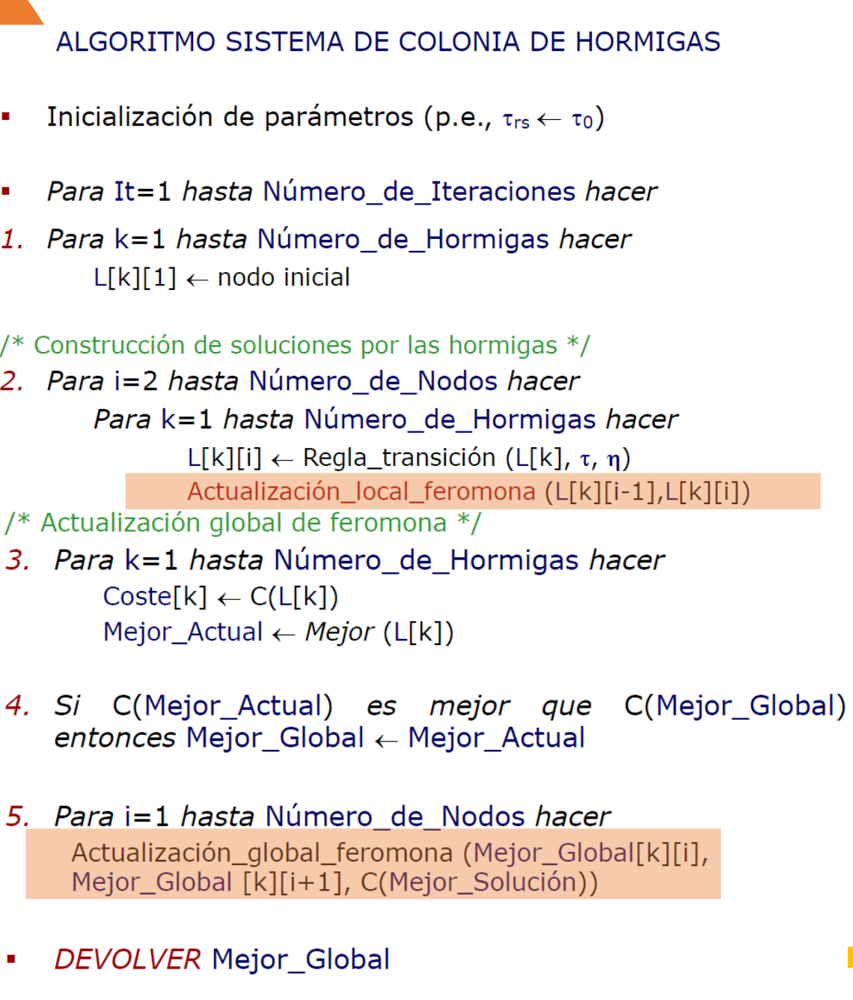
Frente al SH, la actualización local se hace justo después de cada movimiento (dentro del bucle de construcción). La global se hace solo sobre los arcos de Mejor_Global.
2.11 La MH ACO: marco general
Para aplicar la ACO (OCH, optimización basada en colonias de hormigas), el problema tiene que poder representarse como un grafo con pesos. Cada arco guarda dos tipos de información:
- Heurística: la preferencia del arco según el caso concreto del problema. Las hormigas no la modifican, aunque puede variar con el tiempo en problemas dinámicos.
- Memorística: la "deseabilidad" del arco, que es la feromona depositada. Se modifica durante el algoritmo.
La estructura general de un algoritmo de ACO es:
- Inicialización de parámetros, p. ej. una feromona inicial
en cada arco. - Planificación de actividades: generación y activación de hormigas, evaporación de feromona y acciones opcionales del "demonio" (daemon), que son funciones centralizadas sin equivalente natural, como aplicar una búsqueda local a las soluciones.
| Símbolo | Qué representa | Valores típicos |
|---|---|---|
| Feromona del arco: experiencia de la colonia | Empieza en |
|
| Heurística del arco | ||
| α | Peso de la feromona | 1 |
| β | Peso de la heurística | 2 a 5 |
| ρ | Tasa de evaporación | 0,02 – 0,5 |
| m | Nº de hormigas | n (10 en ACS) |
| e | Nº de hormigas elitistas (EAS) | — |
| Prob. de explotar el mejor arco (ACS) | — | |
| ξ | Intensidad de la actualización local (ACS) | 0 < ξ < 1 |
| ¿Qué pasa si…? | Efecto |
|---|---|
| …subo β | Manda la distancia. Desde la ciudad 1 del ejemplo, |
| …pongo α = 0 | Solo heurística: voraz con múltiples arranques, no aprende |
| …pongo β = 0 (o α > 1) | Solo feromona: amplifica los primeros recorridos al azar y da resultados pobres |
| …pongo ρ = 0 | Sin olvido: se fija el primer rastro (como el atajo tardío del puente) |
| …subo mucho ρ | Olvida demasiado rápido. Con ρ = 0,2, sin depósitos, un rastro de 10 baja a 3,28 en 5 iteraciones |
| …pongo |
Los primeros recorridos dominan |
| …pongo |
Convergencia lenta |
| …subo |
Más explotación del mejor arco y menos exploración |
2.12 Optimización basada en nubes de partículas (PSO)
La PSO (ONP, optimización basada en nubes de partículas) fue propuesta por Kennedy y Eberhart (Particle Swarm Optimization, Proc. 1995 IEEE Intl. Conf. on Neural Networks, pp. 1942–1948). Se inspira en el comportamiento social del vuelo de las bandadas de aves y los bancos de peces.
La población es una nube de partículas (particle swarm) que se mueven ("vuelan") por el espacio de búsqueda. El movimiento de cada partícula
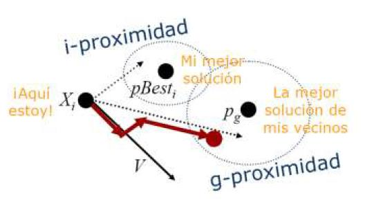
Analogía
Un grupo de amigos busca el mejor bar de una ciudad sin mapa, comunicándose por el móvil. Cada uno sigue andando en la dirección que llevaba (inercia), pero tira hacia el mejor bar que ha visto él (cognitivo, pBest) y hacia el mejor del que le han hablado sus amigos (social, gBest/lBest).
2.12.1 La partícula
Cada partícula
| Elemento | Qué almacena |
|---|---|
| Posición actual en el espacio de búsqueda | |
| Posición de la mejor solución encontrada por la partícula | |
| Velocidad: dirección en la que se moverá ("gradiente") | |
| x_fitness | Fitness de la solución actual ( |
| pBest_fitness | Fitness de la mejor solución local ( |
2.12.2 Funcionamiento
La nube se inicializa generando posiciones y velocidades. Cada componente de la velocidad se genera al azar en [−Vmax, Vmax]. Las partículas se mueven sumando la velocidad a la posición:
Se evalúa la nueva posición y, si su fitness es mejor que pBest_fitness, se actualiza la mejor posición de la partícula:
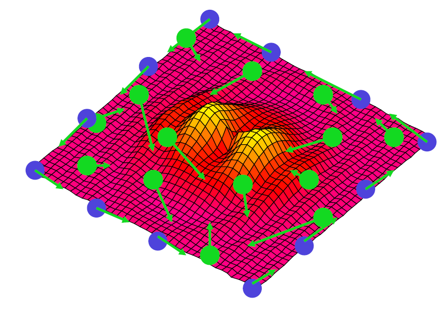
La velocidad se ajusta en cada dimensión
En la fórmula,
Según los valores de
| Tipo | Condición |
|---|---|
| Completo | |
| Solo cognitivo | |
| Solo social | |
| Solo social exclusivo |
2.12.3 Pseudocódigo
La versión local es:
t = 0
Para i = 1 hasta Número_partículas: inicializar Xi y Vi
Mientras no se cumpla la condición de parada:
t ← t + 1
Para i = 1 hasta Número_partículas:
evaluar Xi
Si F(Xi) es mejor que F(pBesti): pBesti ← Xi; F(pBesti) ← F(Xi)
Para i = 1 hasta Número_partículas:
Escoger lBesti, la partícula con mejor fitness del entorno de Xi
Calcular Vi según pBesti y lBesti
Calcular la nueva posición Xi según Xi y Vi
Devolver la mejor solución encontrada
La versión global añade, tras actualizar pBest, "si F(pBest_i) es mejor que F(gBest), entonces gBest ← pBest_i", y calcula
2.12.4 Parámetros
| Parámetro | Valor habitual |
|---|---|
| Tamaño de la nube | 20 – 40 partículas (10 en problemas simples; 100–200 en muy complejos) |
| Velocidad máxima |
Se define a partir del intervalo de cada variable |
| Ratios de aprendizaje | |
| PSO global vs local | La global converge más rápido pero cae más fácilmente en óptimos locales; la local, al revés |
2.12.5 Topologías
La topología define el entorno de cada partícula, al que siempre pertenece la propia partícula. Hay dos tipos de entorno:
- Geográfico: se calcula la distancia al resto y se toman las partículas más cercanas.
- Social: se define a priori una lista de vecinas, independientemente de su posición. Es el más empleado.
Después hay que fijar el tamaño del entorno. El algoritmo no es muy sensible a este parámetro: 3 o 5 son valores habituales con buen comportamiento. Cuando el entorno es toda la nube, es a la vez geográfico y social, y se tiene la PSO global.
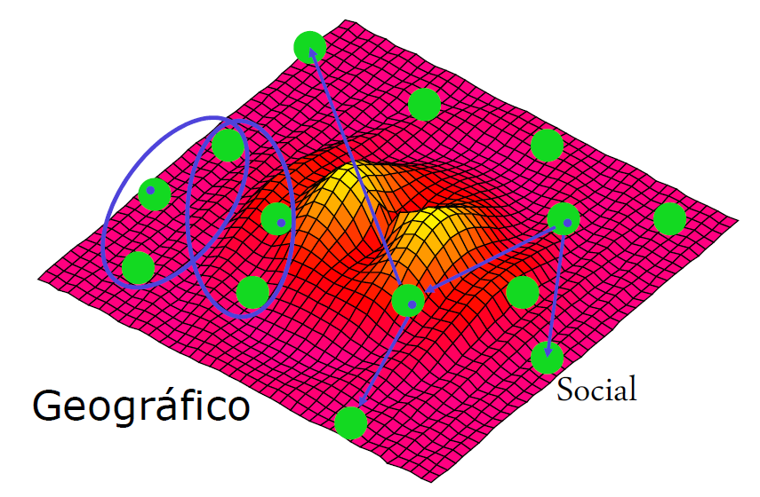
La topología social más usada es el anillo: se numeran las partículas, se colocan en un círculo virtual y el entorno de cada una son sus vecinas en el círculo.
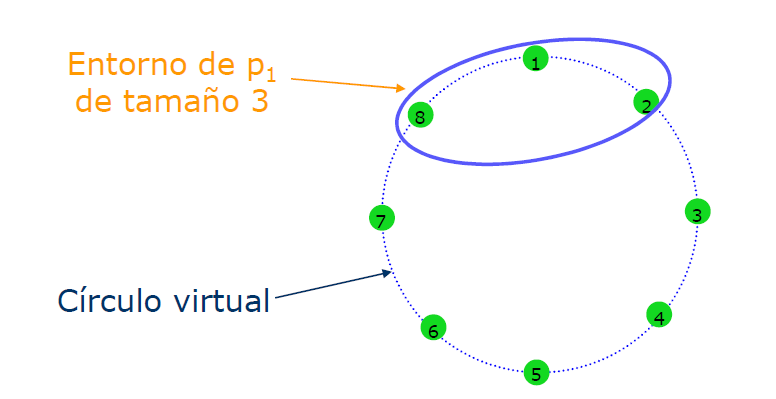
2.12.6 Ejemplo trabajado: una iteración
Minimizar
| Paso | Cálculo | Resultado |
|---|---|---|
| Cognitivo | −1 | |
| Social | −1,5 | |
| Nueva velocidad | −3,5 | |
| Nueva posición | 0,5 | |
| Evaluación | Mejora ambas: pBest = gBest = 0,5 |
| ¿Qué pasa si…? | Efecto |
|---|---|
| … |
Cada partícula busca sola: es como lanzar varias búsquedas independientes |
| … |
Todas corren hacia el mejor: convergen rápido, con riesgo de óptimo local |
| …uso gBest en vez de lBest | Converge más rápido pero cae más en óptimos locales |
| …subo Vmax | Pasos más largos: más exploración, pero puede saltarse el óptimo |
| …subo el tamaño de la nube | Más exploración y más coste por iteración (10 → 100–200 según dificultad) |
Para entenderlo mejor
Particle Swarm Optimization (PSO) Explained Visually — animación de las partículas moviéndose hacia el óptimo (vídeo, 3:26, en inglés). Optimización por enjambre de partículas (Wikipedia) — el algoritmo, la fórmula de la velocidad y sus variantes (artículo).
2.13 Programación genética
La programación genética (PG; 1985, desarrollada por Koza en los años 90) es el aprendizaje automático de instancias de una gramática. Los individuos son expresiones generadas por una gramática libre de contexto (GLC), representadas como cromosomas en forma de grafos o árboles. La búsqueda se restringe con información del dominio: las variables de entrada y salida, el número de etiquetas de las variables de entrada y las estructuras válidas para el consecuente de las reglas.
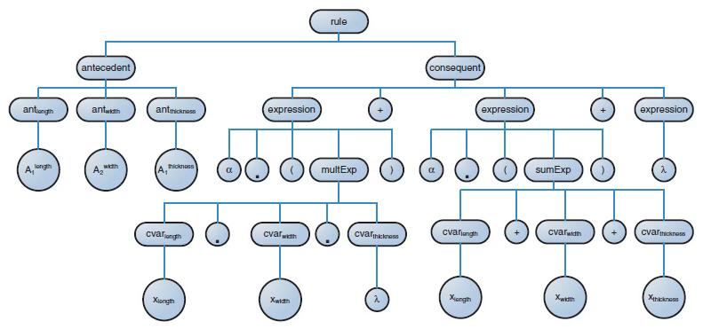
Sus componentes como algoritmo evolutivo son:
| Componente | En la PG |
|---|---|
| Representación | Árboles (GLC) que representan reglas, expresiones aritméticas o lógicas, código… |
| Cruce | Intercambio de subárboles |
| Mutación | Cambio aleatorio en un árbol |
| Selección | Proporcional al fitness |
| Reemplazo | Generacional |
| Espacio de búsqueda | Conjunto de fórmulas (expresiones) posibles |
Un individuo puede ser, por ejemplo, la regla SI (NOC ≤ 2) AND (S > 40000) ENTONCES SI.
2.13.1 Ejemplo: gramática y árbol
Con la gramática + * x1 x1 * 0.37 * x1 x2, que corresponde a la expresión
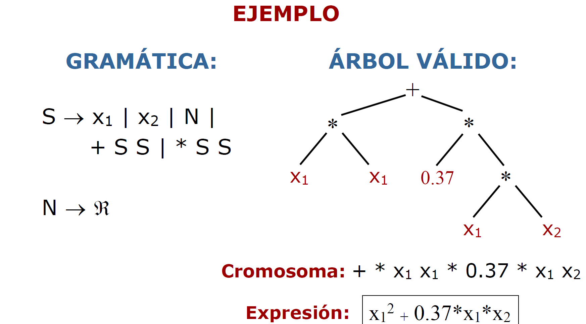
Analogía
La gramática es como las reglas del Lego: dice qué piezas encajan con cuáles. La PG construye al azar figuras que respetan esas reglas, cruza figuras intercambiando trozos enteros (subárboles) y se queda con las que mejor cumplen el objetivo.
2.13.2 Contexto: aprender reglas
Las reglas forman sistemas basados en conocimiento, que capturan la experiencia humana resolviendo problemas. Modelan formalmente el conocimiento explícito de un experto en un ámbito y para un fin: control inteligente, monitorización/supervisión de procesos, diagnóstico, clasificación, regresión… Pueden tener soporte simbólico o borroso. Hay un debate ("bizantino en algunos aspectos") entre interpretabilidad y precisión.
Una regla es una representación declarativa del conocimiento: SI antecedente(s) ENTONCES consecuente(s), o sea, condición → acción. El ejemplo de las diapositivas es un proyecto de descubrimiento automático de reglas no convencionales: reglas borrosas TSK.
2.13.3 PG para reglas de regresión TSK
En las reglas TSK (Takagi-Sugeno-Kang), el consecuente es una función polinómica de la entrada:
Hacen una regresión "inteligente" combinada con conocimiento: hay varias f, se elige cada una según las condiciones del antecedente y se interpolan los resultados. Dan mayor precisión pero menor claridad expresiva, y típicamente la f se fija de antemano (variables y grado del polinomio).
El problema es flexibilizar el consecuente para que adopte cualquier estructura compatible con una gramática: lineal, cuadrática, de orden superior, con productos entre variables y aprendiendo automáticamente todos los parámetros.
El caso es estimar tiempos de producción industrial en una fábrica de muebles (Martínez Otero). Los procesos son corte de tableros, lijado, ensamblado, encolado, montaje y embalado, con manipulación y preparación en todas las operaciones. Interesa para estimar costes y planificar la producción. Estimar tiempos es difícil por varias razones: hay imprecisión y errores en las medidas, partes del proceso no modeladas (sobre todo las manuales), los tiempos dependen de la máquina y, en una misma máquina, cambian según la clase de las variables de entrada.
La aproximación es definir una gramática para el consecuente que solo permita combinaciones (sumas, productos) significativas para el experto. Importa porque los resultados deben ser interpretables: de ellos pueden depender decisiones organizativas. Una regla aprendida tiene este aspecto:
IF
En general, cada regla
Cada término
Operadores:
- Cruce de un punto con
: se intercambian subárboles de expresiones entre dos cromosomas. - Mutación de un gen variable: se reemplaza un subárbol.
- Mutación de un gen terminal (coeficiente): puede ser aleatoria, con probabilidad
, o de paso, que incrementa o decrementa con en un paso de cambio significativo.
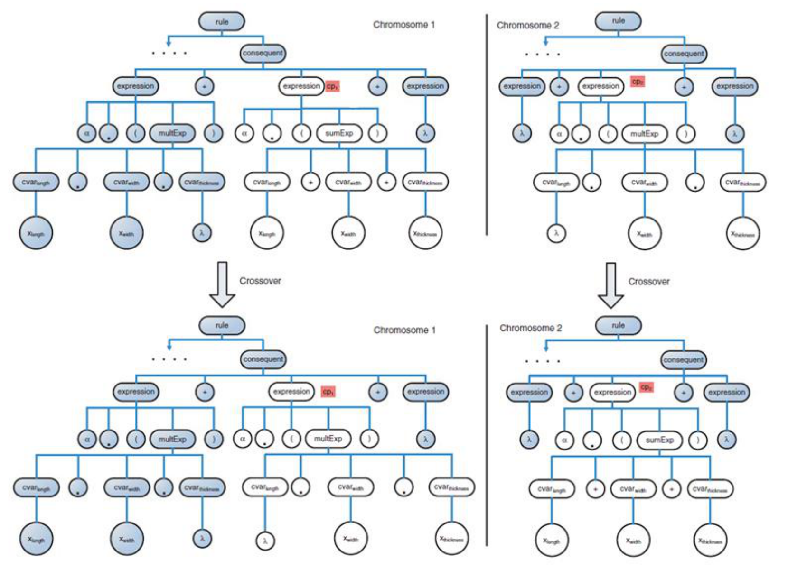
El algoritmo sigue tres pasos:
- Inicializar la población: generar reglas, evaluarlas y redimensionar la población (i).
- Para cada iteración hasta maxIterations: cruce y mutación, evaluación y redimensionado (ii).
- Seleccionar las reglas de la base de conocimiento final.
Ejemplos de reglas aprendidas para la lijadora-calibradora:
- Si length es alto, width bajo y thickness alto → time = 120·length + 60·width + 180·(length·width·thickness)
- Si length es bajo → time = 120·length + 240·(length·width·thickness)
- Si width y thickness son bajos → time = 120·length + 60·thickness + 180·(length·width·thickness)
- Si width es bajo → time = 120·length + 240·(length·width·thickness)
Estas reglas tienen una estructura adecuada al dominio y al experto, muestran la contribución explícita de cada variable (sus pesos) y asociaciones significativas de variables, y son pocas.
Resultados (validación cruzada de 5 particiones; #R = nº de reglas; MSE = error cuadrático medio en entrenamiento y test;
| Método | Cortadora de chapa (VS): #R | MSE |
MSE |
Sierra circular (RS-II): #R | MSE |
MSE |
|---|---|---|---|---|---|---|
| GP-TSK | 6 | 1,287 | 1,274 | 5 | 1,088 | 1,096 |
| WM | 125 | 2,971 | 3,169 | 125 | 4,811 | 4,980 |
| COR | 102 | 2,172 | 2,479 | 94 | 3,066 | 3,601 |
| COR+TUN | 102 | 1,376 | 1,691 | 94 | 1,511 | 1,953 |
| MOGUL-TSK | 23 | 1,303 | 1,440 | 20 | 2,363 | 2,729 |
| NN-MPCG | – | 990 | 1,003 | – | 1,096 | 1,139 |
La tabla solo recoge las medias. GP-TSK consigue errores parecidos a los de la red neuronal (NN-MPCG), que no es interpretable, con solo 5–6 reglas frente a las 20–125 del resto de métodos. En la sierra circular tiene el menor error de todos.
Más información en Mucientes, Vidal, Bugarín y Lama: Processing times estimation in a manufacturing industry through genetic programming (GEFS 2008, 95–100) y Processing time estimations by variable structure TSK rules learned through genetic programming (Soft Computing 13(5), 497–509, 2009).
Para entenderlo mejor
Programación genética (Wikipedia) — representación en árbol, cruce de subárboles y ejemplos (artículo).
2.14 Ideas clave
- MH basadas en poblaciones: evolucionan un conjunto de soluciones (CE, PSO) frente a las de trayectoria (SA, tabú) o constructivas (GRASP, ACO).
- Computación evolutiva (Holland, 1975): selección natural sobre una población de soluciones; método "débil" y probabilístico que da soluciones subóptimas de forma eficiente. Variantes: estrategias de evolución, programación evolutiva, programación genética (árboles), algoritmos genéticos (vectores).
- Ciclo: población inicial → fitness → selección → cruce (
0,6–0,9) → mutación ( muy baja) → reemplazo → parada. Variación = diversidad; selección = calidad. - Representación: cromosoma, gen, alelo; genotipo ↔ fenotipo. Binaria, real, de orden (necesita reparación).
- Fitness: hasta el 95 % de la CPU; varios objetivos se agregan.
- Selección: aleatoria, torneo (k), ranking, ruleta (proporcional). Presión selectiva.
- Cruce: 1 y 2 puntos (binario); OX, PMX, CX (orden); aritmético y plano (real). Mutación: bit, random resetting, intercambio/inserción/mezcla, gaussiana
. - Reemplazo: generacional (con elitismo) o permanente (RW, RTS, WAMS, DC).
- Varias ejecuciones + estadística. Presión alta → convergencia prematura. Equilibrio exploración / explotación.
- Inteligencia de enjambre: comportamiento emergente de agentes simples, auto-organizados y descentralizados, sin plan global; robusta y flexible. SI ⊂ MAS ⊂ IA.
- Estigmergia: comunicación indirecta modificando el entorno (feromonas). Puente doble: con ramas iguales convergen a una cualquiera; con r = 2, a la corta; con el atajo añadido tarde siguen por la larga (hace falta evaporación).
- Regla de decisión ACO:
sobre los vecinos factibles; α pesa la feromona (memoria), β la heurística ( ). - Actualización:
, con . Depósito = explotación; evaporación = diversidad. algo mayor que lo depositado en una iteración. - Variantes: SH/AS (Dorigo 1996, base); EAS (refuerzo extra
a la mejor global); RAS (depósito según el ranking); ACS (regla pseudoaleatoria con , actualización global solo en la mejor solución, actualización local que resta feromona para diversificar). - Marco ACO: problema como grafo con pesos; información heurística (fija) y memorística (feromona); inicialización + hormigas + evaporación + demonio (búsqueda local…).
- PSO (Kennedy y Eberhart, 1995): partículas con X, V, pBest;
, . Componentes cognitiva y social; tipos completo, cognitivo, social y social exclusivo. - Parámetros PSO: 20–40 partículas,
según el rango, . Global: converge rápido pero cae en óptimos locales; local: al revés. Topologías geográfica o social (anillo, tamaño 3–5). - Programación genética (Koza): evoluciona árboles generados por una gramática libre de contexto; cruce = intercambio de subárboles, mutación = cambio en el árbol, selección proporcional, reemplazo generacional. Caso: reglas TSK de estructura variable para estimar tiempos de producción, con precisión parecida a una red neuronal y solo 5–6 reglas interpretables.